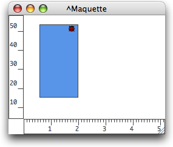
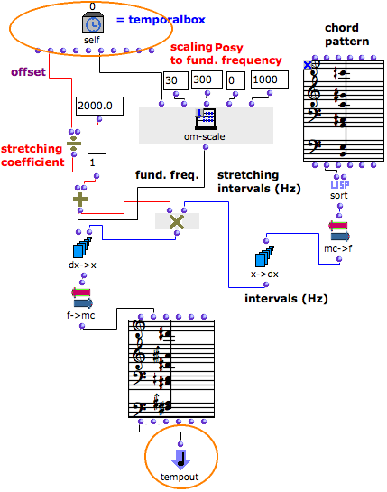

OpenMusic DocumentationHiérarchie de section : OM 6.6 User Manual > Maquettes > Maquette Programming > TempBoxes Programming > Programming with the Tempin
OpenMusic DocumentationHiérarchie de section : OM 6.6 User Manual > Maquettes > Maquette Programming > TempBoxes Programming > Programming with the Tempin
Navigation : page précédente | page suivante
Attention, votre navigateur ne supporte pas le javascript ou celui-ci à été désactivé. Certaines fonctionnalités de ce guide sont restreintes.
Example 1 : Programming With the Self Input Box
Adding a TemporalBox into a Maquette

|
Each output of the Self Input Box can be connected to other boxes within the patch of a TemporalBox. This internal maquette contains one TemporalBox.
|
Applying the Self Input Box Values Inside a Temporalbox : Programming a Chord

The " posy " – of the box is returned by the Self Input Box in the patch. Om-scale scales it between 30 and 300, range of a fundamental frequency.
A "pattern-chord" provides a harmonic structure that can be modified by the program.
- Mc->f converts the pitches of the chord into frequencies.
- X->dx returns the intervals of the chord, starting from the fundamental.
The box's " offset " is returned by the Self Input Box and converted into a stretching coefficient that applies to the intervals of the chord.
Eventually, these intervals are added to the fundamental frequency.
The resulting list of frequencies is converted into midicents by f->mc and returned to a chord box. This chord becomes the musical value of the box via a connection to the Tempout.
Références :
Plan :
Navigation : page précédente | page suivante
A propos...(c) Ircam - Centre Pompidou